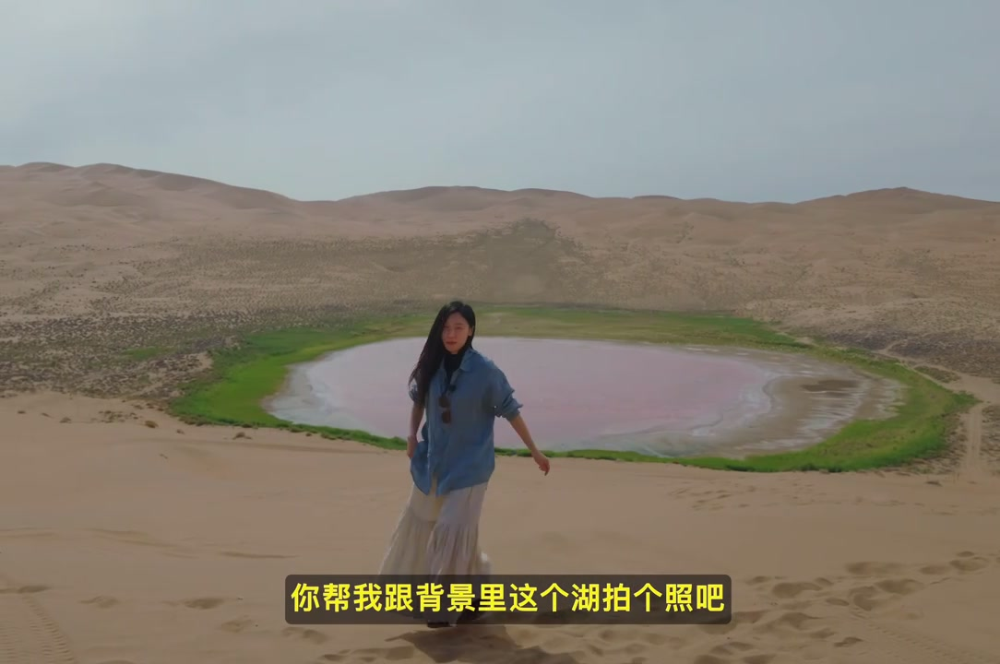
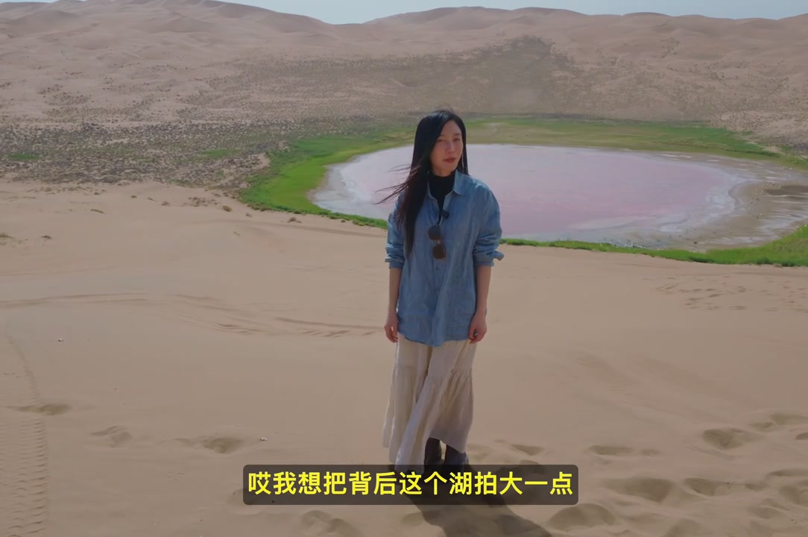
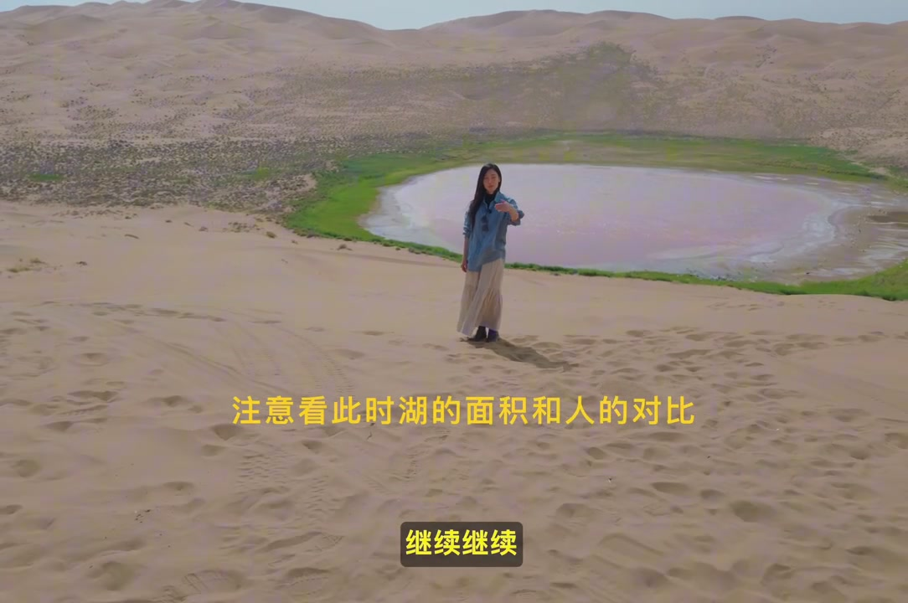
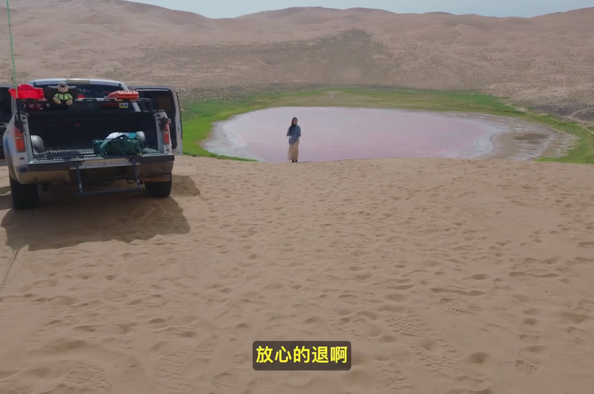
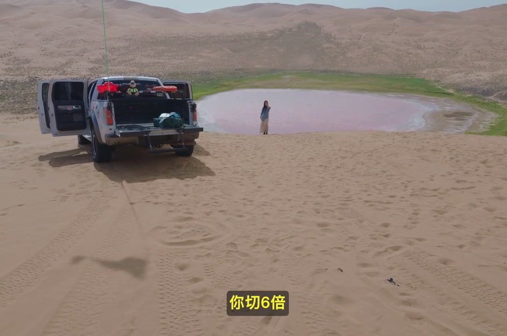
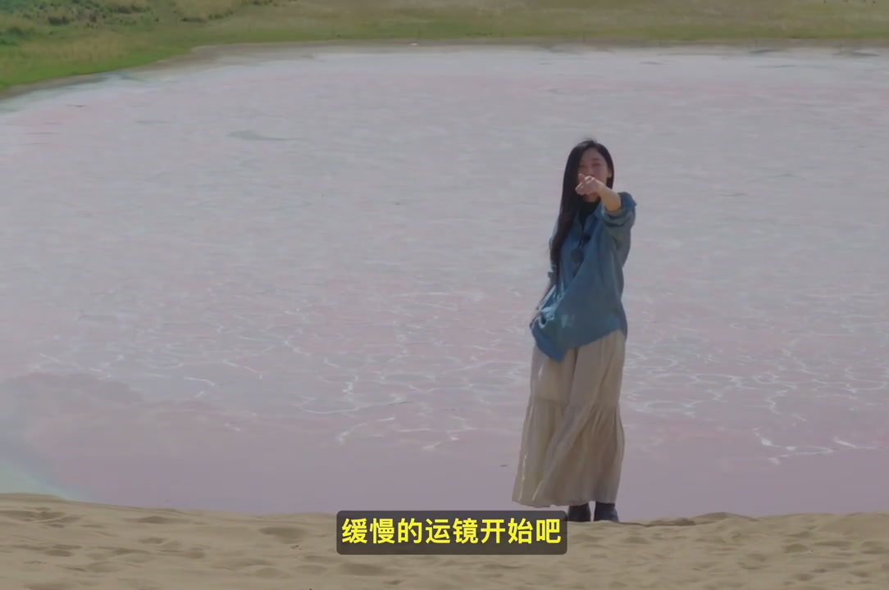
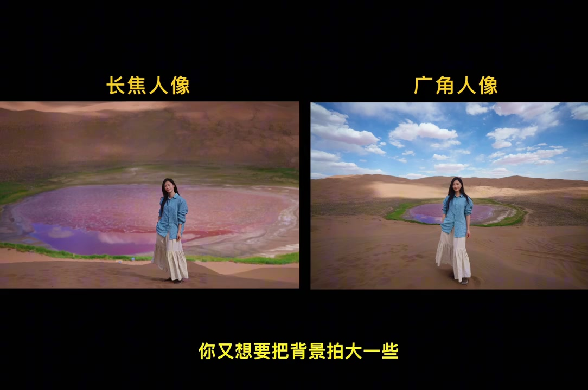
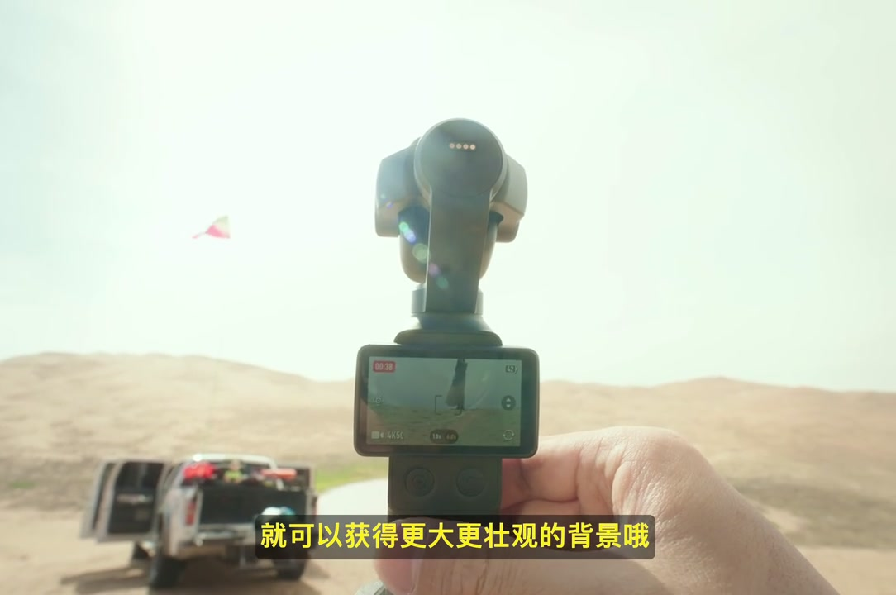

开场：沙漠粉湖前，先提出合影需求
画面落在沙漠沙丘与圆形粉湖之间。讲述者穿着浅蓝衬衫与米白长裙站在湖前，像在现场拜托摄影师：「帮我跟背景里这个湖拍个照。」旅行合影的场景一下子立住了——主角不是人像本身，而是背后那片想要入画的风景。
画面字幕：「你帮我跟背景里这个湖拍个照吧」
说明：Whisper 将「背景里这个湖拍个照」误识为「贝经理这个狐牌的照」。下文叙述以可见字幕与画面为准；页面末尾仍完整保留全部 Whisper 分段。

真正的诉求：把背后的湖拍大一点
合影还没开始，她立刻补上一句关键要求——不是「把人拍清楚」，而是「把背后这个湖拍大一点」。视频用这句把问题钉死：广角近拍时，粉湖在画面里往往偏小、偏远，和期待的「壮丽背景」对不上。
画面字幕：「哎我想把背后这个湖拍大一点」

解决方案不是凑近，而是一路往后退
她先劝摄影师「不然你往后退吧」，接着用一连串「退退退」「继续」「多退点」「大胆的退、放心的退」把过程演成喜剧节奏。画面同步拉开：白色皮卡、沙丘足迹和粉湖一起入画，人物相对湖面越来越小。叠字还提醒观众——注意此时湖的面积和人的对比。
画面字幕：「继续继续」／叠字：「注意看此时湖的面积和人的对比」
退到差不多后，她又叫对方「再过来一点」，像在现场微调机位距离，为下一步切长焦留出安全余量。


距离够了，再切到六倍长焦
机位退开之后，下一步不是继续后退，而是「切六倍」。视频把操作拆成两段：先解决距离，再切换焦段——这正是手机或口袋设备上最容易落地的旅拍顺序。
画面字幕：「你切6倍」

在平行方向上缓慢运镜，开始成片
切到长焦后，她指向镜头一侧，提示可以在「平行方向上缓慢的运镜」。人物沿沙脊走动，粉湖作为稳定背景被压缩进画面——这一段演示的是：长焦不只是定格合影，也能带着轻微运镜把背景压得更满。
画面字幕：「好现在你就可以在平行方向上缓慢的运镜开始吧」

并排对照：长焦人像 vs 广角人像
总结段先回到旅行场景：「当我们出门旅行时，要和背景里的建筑物或者风景合照。」随即打出左右对比——左侧标「长焦人像」，粉湖与沙丘被压缩得又大又近；右侧标「广角人像」，同一人同一湖，湖面变小，天空与沙丘延展更开。字幕点题：你又想要把背景拍大一些。
画面字幕：「要和背景里的建筑物或者风景合照」／「你又想要把背景拍大一些」
解决办法也被说死：可以像她一样请摄影师一直往后退，退到大约十米开外。
画面字幕：「请摄影师一直往后退」

收束：切长焦，拿到更大更壮观的背景
最后把步骤串成口令：退到十米开外 → 切到手机或拍摄设备的长焦焦段 → 获得更大、更壮观的背景。画面切到手持云台机位（可见约 4K60 与变焦档），强调手机与口袋设备同样适用。结尾反问一句：「那这个旅拍小技巧你学会了吗。」
画面字幕：「再切到手机或者拍摄设备的长焦焦段」／「就可以获得更大更壮观的背景哦」
